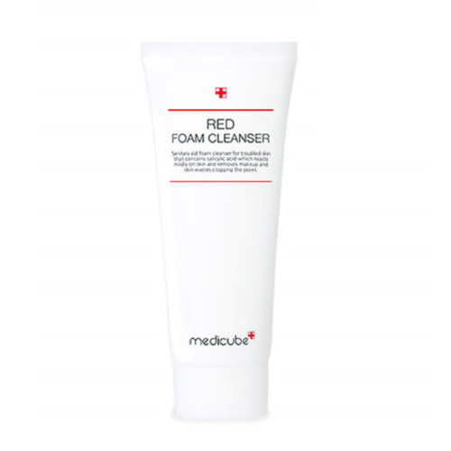
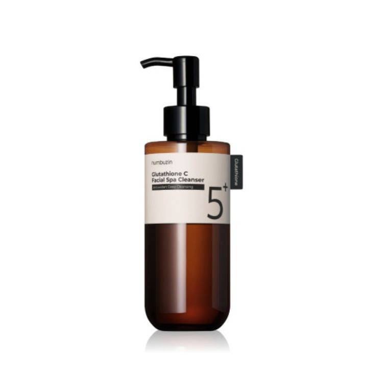
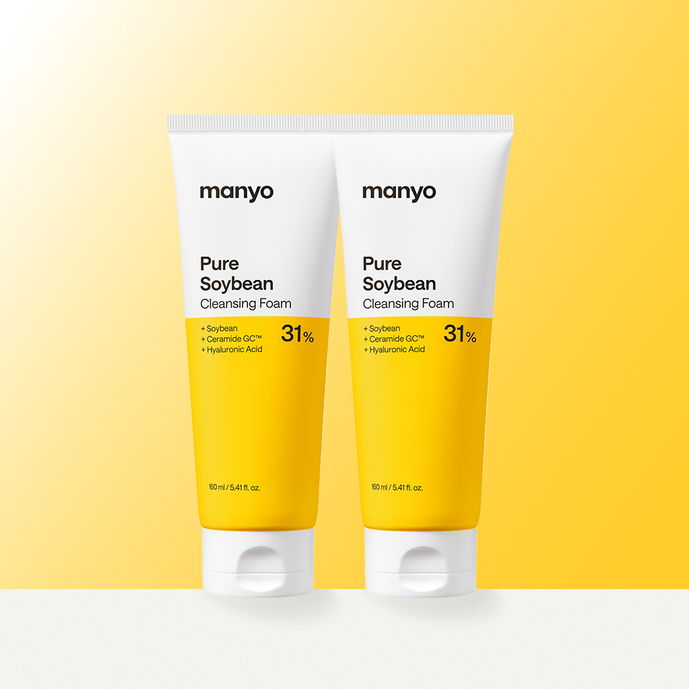
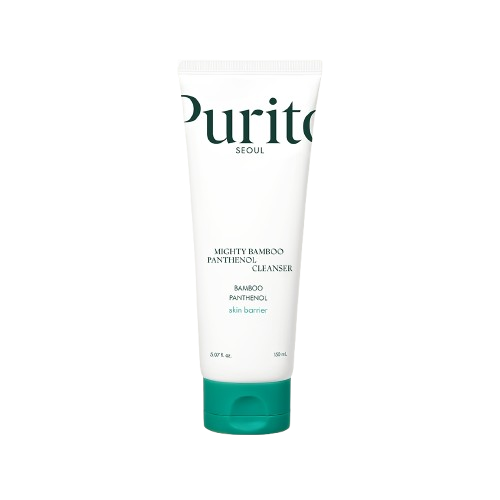
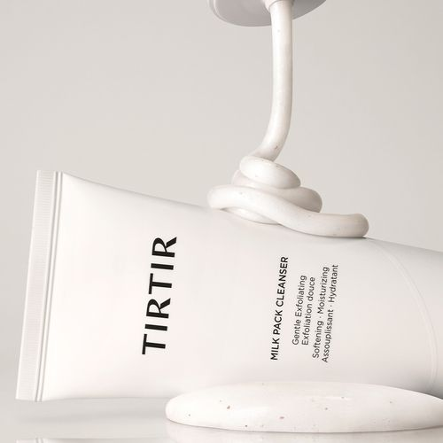

Home › Korean Cleanser
6 Best Korean Cleansers for Glass Skin (2026)
Korean skincare worth trying
I rounded up 6 Korean cleanser worth knowing — the ones K-beauty fans keep coming back to. Real products, honest notes, and roughly what they cost. Prices are approximate; check the retailer for today's price.

Red Foam Cleanser
Great for everyday use
≈ $11.0 (approx) · Ships worldwide
Check price on Amazon →
1025 Dokdo Cleanser
Cleans deeply without drying
≈ $12.3 (approx) · Ships worldwide
Check price on Amazon →
No. 5 Glutathione C Aroma Massaging Deep Cleanser
Enjoy the spa-like experience
≈ $11.9 (approx) · Ships worldwide
Check price on Amazon →
Pure Soybean Cleansing Foam
Gentle on sensitive skin
≈ $14.6 (approx) · Ships worldwide
Check price on Amazon →
Mighty Bamboo Pantenol Cleanser
Soothing and non-irritating
≈ $11.1 (approx) · Ships worldwide
Check price on Amazon →
Milk Pack Cleanser
Leaves skin feeling soft
≈ $6.5 (approx) · Ships worldwide
Check price on Amazon →Save for later
Prices are approximate and pulled from public shopping data; always check the retailer for the current price and shade/size before buying.